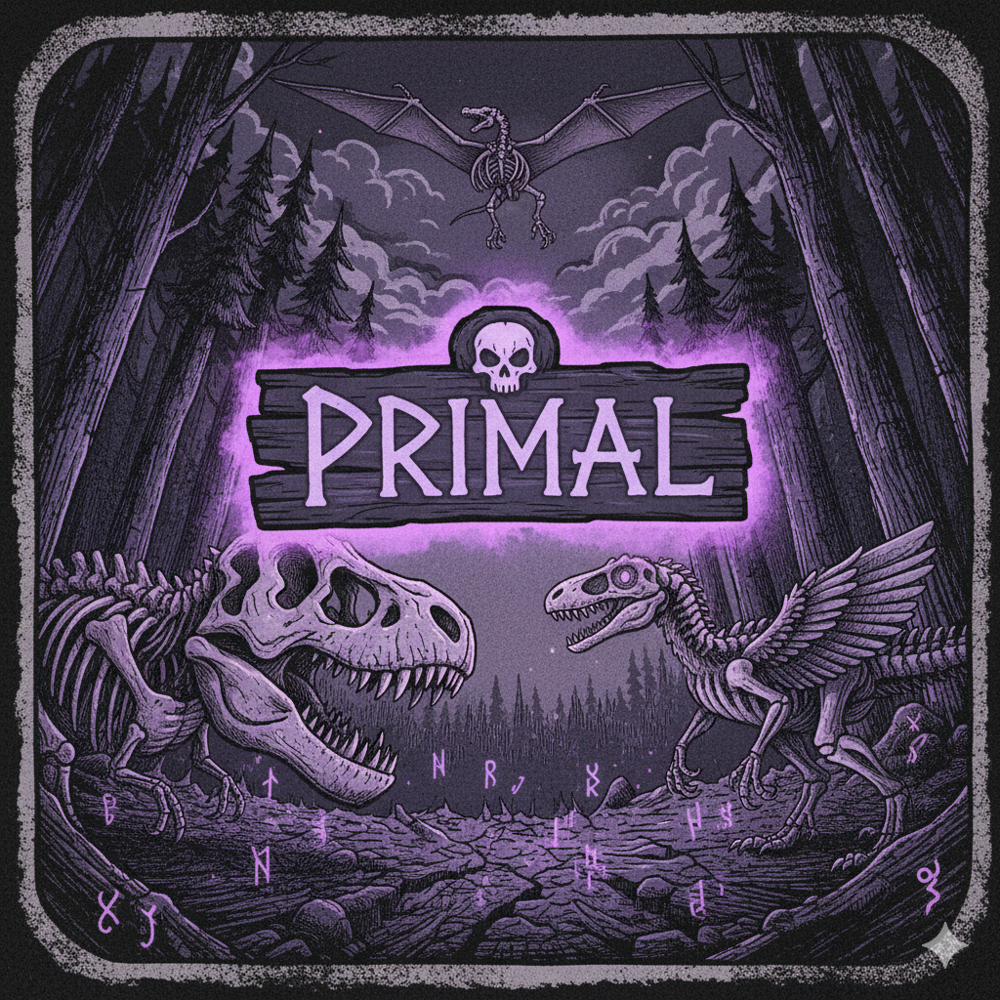

O Rito se Conclui. Sua Jornada Começa.
Baixe a versão DEMO de PRIMAL, feita no GameMaker.

DOWNLOAD PRIMAL (v1.0.0)
Recursos Chave do Jogo:
- Sistema de Cartas Único baseado em Sacrifício (Carne).
- Progressão Roguelite com árvore de decisões.
- Esta Demo vem com mais de 20 Cartas e Habilidades exclusivas.
- Gráficos em pixel art sombrios e envolventes.
Compatível com Windows 10/11 (64-bit).